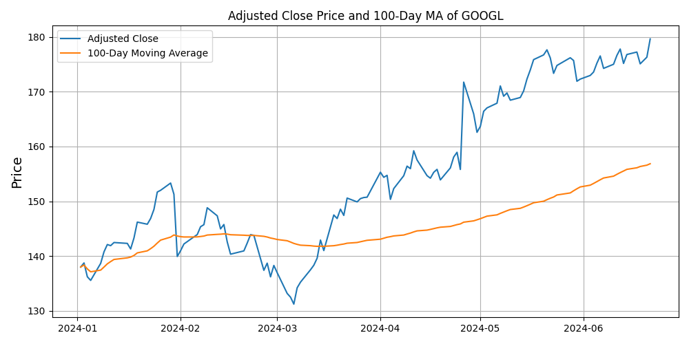
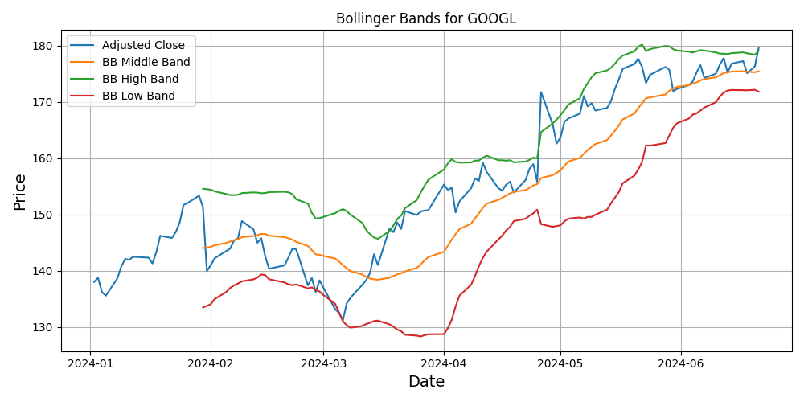

This plot shows the adjusted close price of a stock over time. The
plot is designed to help:
Visualize historical price trends of the stock.
Identify patterns and movements in the stock price over time.
Use historical price trends to understand the stock’s performance
over time.
Identify support and resistance levels to anticipate potential price
movements.
What to Look For:
Historical Trends:
Upward Trend: Indicates periods where the stock
price is generally increasing.
Downward Trend: Indicates periods where the stock
price is generally decreasing.
Sideways Movement: Indicates periods of
consolidation where the stock price remains relatively stable.
Support and Resistance Levels:
Support Levels: Price levels where the stock has
repeatedly had difficulty falling below, indicating a potential buying
interest.
Resistance Levels: Price levels where the stock has
repeatedly had difficulty rising above, indicating a potential selling
interest.
Significant Price Movements:
Price Spikes: Sharp increases in price, which may
indicate positive news or events.
Price Drops: Sharp decreases in price, which may
indicate negative news or events.
Price Patterns:
Trends and Cycles: Recurring patterns or cycles in
price movements that can indicate future price movements.
Chart Patterns: Recognizable patterns such as head
and shoulders, double tops, and double bottoms that can signal potential
trend reversals or continuations.
Alt text
Moving Averages (50-day,
100-day, 200-day)
Description:
This plot shows the adjusted close price of a stock along with its
50-day, 100-day, and 200-day moving averages. The plot is designed to
help:
Visualize the long-term trend of the stock price.
Smooth out short-term fluctuations to identify underlying
trends.
What to Look For:
Moving Averages:
50-day Moving Average (50 MA): Short-term trend
indicator. It is more responsive to recent price changes and can signal
shorter-term trends.
100-day Moving Average (100 MA): Medium-term trend
indicator. It balances sensitivity and stability, providing a clearer
picture of the trend compared to the 50 MA.
200-day Moving Average (200 MA): Long-term trend
indicator. It is less responsive to short-term price movements,
highlighting the overarching trend.
Price Crossing Moving Averages:
Price Above Moving Average: Indicates a bullish
trend. The stock is trading above its average price over the specified
period.
Price Below Moving Average: Indicates a bearish
trend. The stock is trading below its average price over the specified
period.
Moving Average Crossovers:
Golden Cross: When a shorter-term moving average
(e.g., 50 MA) crosses above a longer-term moving average (e.g., 200 MA),
it suggests a bullish signal.
Death Cross: When a shorter-term moving average
crosses below a longer-term moving average, it suggests a bearish
signal.
Moving Average Slope:
Upward Slope: Indicates an uptrend in the stock
price.
Downward Slope: Indicates a downtrend in the stock
price.

Alt text
Bollinger Bands
Description:
This plot displays the adjusted close price along with its Bollinger
Bands. The plot is designed to help:
Visualize price volatility and identify potential breakout points in
trading.
Identify potential reversal points based on Bollinger Bands
principles.
What to Look For:
Price Touching Bands:
Upper Band: Indicates overbought conditions;
potential for a reversal or pullback.
Lower Band: Indicates oversold conditions;
potential for a reversal or upward movement.
Band Width:
Narrowing Bands (Squeeze): Low volatility;
potential for a sharp price movement (breakout).
Widening Bands: High volatility; often seen during
strong trends.
Price Moving Along Bands:
Upper Band: Continuous movement indicates strong
upward momentum.
Lower Band: Continuous movement indicates strong
downward momentum.
Band Indicators and Signals:
Band Crossovers: Crossing above the middle band
indicates a bullish trend; crossing below indicates a bearish
trend.
Divergence: Difference between price movement and
band indicators suggests potential trend reversals.
Percentage Bands:
Position within Bands: Indicates the strength or
weakness of the current price relative to the high and low bands.

Alt text
MACD (Moving Average
Convergence Divergence)
Description:
This plot shows the MACD line, MACD signal line, and MACD histogram
(the difference between the two lines). The plot is designed to
help:
Visualize the relationship between two moving averages.
Identify potential trading signals derived from MACD crossovers and
divergence patterns.
Monitor the histogram for changes in momentum.
What to Look For:
MACD Line and Signal Line Crossovers:
Bullish Crossover: When the MACD line crosses above
the signal line, it suggests a potential buy signal.
Bearish Crossover: When the MACD line crosses below
the signal line, it suggests a potential sell signal.
MACD Histogram:
Positive Histogram: Indicates the MACD line is
above the signal line, suggesting bullish momentum.
Negative Histogram: Indicates the MACD line is
below the signal line, suggesting bearish momentum.
Histogram Peaks and Troughs: Changes in the height
of the histogram can indicate the strength of the momentum. For example,
a decreasing positive histogram might indicate weakening bullish
momentum.
Divergence Patterns:
Bullish Divergence: When the price makes lower lows
but the MACD makes higher lows, it suggests a potential reversal to the
upside.
Bearish Divergence: When the price makes higher
highs but the MACD makes lower highs, it suggests a potential reversal
to the downside.
MACD Line Crossing Zero:
Crossing Above Zero: Indicates the start of a
bullish trend.
Crossing Below Zero: Indicates the start of a
bearish trend.
Alt text
Relative Strength Index (RSI)
Description:
The RSI is a momentum oscillator that measures the speed and change
of price movements. The plot includes horizontal lines at RSI levels of
70 (overbought) and 30 (oversold) to indicate potential reversal zones.
This visualization helps:
Identify overbought or oversold conditions in the market.
Predict potential trend reversals based on RSI signals.
What to Look For:
RSI Levels:
Above 70 (Overbought): Indicates that the stock may
be overbought, suggesting a potential sell signal or trend
reversal.
Below 30 (Oversold): Indicates that the stock may
be oversold, suggesting a potential buy signal or trend reversal.
RSI Divergence:
Bullish Divergence: When the stock price makes a
new low but the RSI makes a higher low, it can indicate a potential
upward reversal.
Bearish Divergence: When the stock price makes a
new high but the RSI makes a lower high, it can indicate a potential
downward reversal.
RSI Crossovers:
Crossing Above 30: Can indicate a bullish signal,
suggesting the stock is exiting oversold conditions.
Crossing Below 70: Can indicate a bearish signal,
suggesting the stock is exiting overbought conditions.
RSI Trends:
Upward RSI Trend: Indicates increasing momentum in
the upward direction.
Downward RSI Trend: Indicates increasing momentum
in the downward direction.
Alt text
Volume
Description:
This function generates a bar chart showing the trading volume of a
stock over time. The plot is designed to help:
Visualize the trading activity and liquidity of the stock.
Understand the intensity of trading over different periods.
Use volume spikes to identify periods of significant trading
activity and potential price movement.
What to Look For:
Volume Spikes:
High Volume: Indicates increased trading activity,
often associated with significant news, events, or market interest.
High Volume with Price Increase: Confirms a bullish
trend, as increased buying drives the price up.
High Volume with Price Decrease: Confirms a bearish
trend, as increased selling drives the price down.
Low Volume with Price Movement: Suggests a lack of
conviction behind the price movement, which may not be sustainable.
Volume as Confirmation:
Support and Resistance Levels: Volume can confirm
breakouts or breakdowns at key price levels. Higher volume at these
levels strengthens the validity of the breakout or breakdown.
Trend Reversals: Sharp changes in volume can
precede or confirm trend reversals.